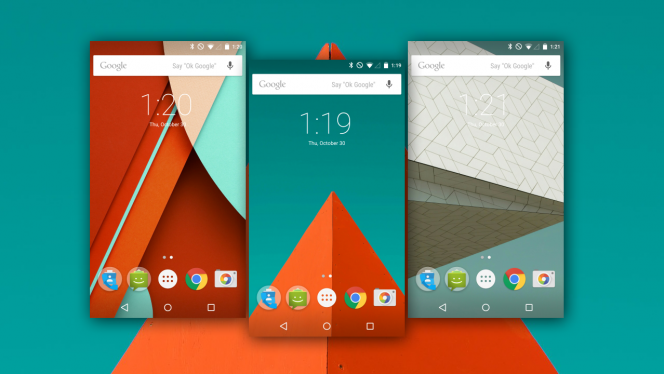

Android 5.0 Lollipop
Esta versão tem como destaque a integração do smartphone com outros dispositivos compatíveis, como um relógio inteligente. Por ser a versão mais recente, o Google quis entregar um sistema com melhor desempenho. Aqui podemos perceber um sistema mais fluido ao rodar apps e uma maior economia no consumo da bateria. Um dos diferenciais do Android 5.0 está nas notificações: as mensagens podem ser visualizadas sem a necessidade de desbloquear o smartphone. Na versão Lollipop, os recursos multimídia também foram melhorados. O Android 5.0 conta com suporte de áudio por meio da porta USB. Já para quem usa a câmera para tirar várias fotos, esta versão é compatível com o formato RAW.
